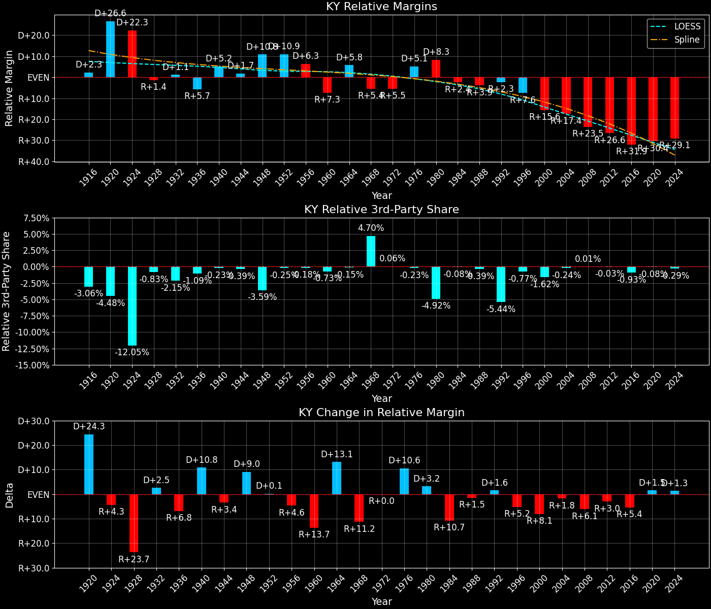

Kentucky (KY) — Statewide

Margins · 3rd-Party share · Pres. deltas

Relative margins · Relative 3rd-Party · Rel. deltas
Kentucky (KY) — Total Data
| Year | EVs | D | R | State Margin | Nat. Margin | Rel. Margin | Total votes |
|---|---|---|---|---|---|---|---|
| 1968 | 9 | 397,541(37.6%) | 462,411(43.8%) | R+6.1 | R+0.7 | R+5.4 | 1,055,893 |
| 1972 | 9 | 371,159(34.8%) | 676,446(63.4%) | R+28.6(Δ R+22.5) | R+23.1(Δ R+22.4) | R+5.5(Δ R+0.0) | 1,067,499 |
| 1976 | 9 | 615,717(52.8%) | 531,852(45.6%) | D+7.2(Δ D+35.8) | D+2.1(Δ D+25.2) | D+5.1(Δ D+10.6) | 1,167,142 |
| 1980 | 9 | 616,417(47.6%) | 635,274(49.1%) | R+1.5(Δ R+8.6) | R+9.7(Δ R+11.8) | D+8.3(Δ D+3.2) | 1,294,627 |
| 1984 | 9 | 539,589(39.4%) | 822,782(60.0%) | R+20.7(Δ R+19.2) | R+18.2(Δ R+8.5) | R+2.4(Δ R+10.7) | 1,370,461 |
| 1988 | 9 | 580,368(43.9%) | 734,281(55.5%) | R+11.6(Δ D+9.0) | R+7.7(Δ D+10.5) | R+3.9(Δ R+1.5) | 1,322,517 |
| 1992 | 8 | 665,104(44.6%) | 617,178(41.3%) | D+3.2(Δ D+14.8) | D+5.6(Δ D+13.3) | R+2.3(Δ D+1.6) | 1,492,900 |
| 1996 | 8 | 636,614(45.8%) | 623,283(44.9%) | D+1.0(Δ R+2.3) | D+8.5(Δ D+3.0) | R+7.6(Δ R+5.2) | 1,388,708 |
| 2000 | 8 | 638,898(41.4%) | 872,492(56.5%) | R+15.1(Δ R+16.1) | D+0.5(Δ R+8.0) | R+15.6(Δ R+8.1) | 1,544,187 |
| 2004 | 8 | 712,733(39.7%) | 1,069,439(59.5%) | R+19.9(Δ R+4.7) | R+2.5(Δ R+3.0) | R+17.4(Δ R+1.8) | 1,795,882 |
| 2008 | 8 | 751,985(41.2%) | 1,048,462(57.4%) | R+16.2(Δ D+3.6) | D+7.3(Δ D+9.7) | R+23.5(Δ R+6.1) | 1,826,620 |
| 2012 | 8 | 679,370(37.8%) | 1,087,190(60.5%) | R+22.7(Δ R+6.5) | D+3.9(Δ R+3.4) | R+26.6(Δ R+3.0) | 1,797,212 |
| 2016 | 8 | 628,854(32.7%) | 1,202,971(62.5%) | R+29.8(Δ R+7.1) | D+2.1(Δ R+1.8) | R+31.9(Δ R+5.4) | 1,924,149 |
| 2020 | 8 | 772,474(36.2%) | 1,326,646(62.1%) | R+25.9(Δ D+3.9) | D+4.5(Δ D+2.4) | R+30.4(Δ D+1.5) | 2,136,768 |
| 2024 | 8 | 704,043(33.9%) | 1,337,494(64.5%) | R+30.5(Δ R+4.6) | R+1.5(Δ R+5.9) | R+29.1(Δ D+1.3) | 2,074,530 |
Column explanations
- Δ
- Change (delta) in the value from the previous election year.
- Year
- Election year.
- EVs
- Number of electoral votes allocated to this state or unit.
- D
- Number of votes for the Democratic candidate (raw count(pct%)).
- R
- Number of votes for the Republican candidate (raw count(pct%)).
- State Margin
- Margin between the two major-party candidates, including third-party votes ((D - R)/total).
- Nat. Margin
- The national presidential margin for that year, including third-party votes ((D_total - R_total)/total_votes).
- Rel. Margin
- The presidential margin relative to the national presidential margin (Margin - Nat. Margin).
- Total votes
- Total voter turnout or ballots cast (when provided).
Kentucky (KY) — Third-Party Data
| Year | D | R | Other votes | State 3rd-Party Share | 3rd-Party Nat. Share | 3rd-Party Rel. Share |
|---|---|---|---|---|---|---|
| 1968 | 397,541(37.6%) | 462,411(43.8%) | 195,941(18.6%) | 18.56% | 13.86% | 4.70% |
| 1972 | 371,159(34.8%) | 676,446(63.4%) | 19,894(1.9%) | 1.86% | 1.80% | 0.06% |
| 1976 | 615,717(52.8%) | 531,852(45.6%) | 19,573(1.7%) | 1.68% | 1.90% | -0.23% |
| 1980 | 616,417(47.6%) | 635,274(49.1%) | 42,936(3.3%) | 3.32% | 8.24% | -4.92% |
| 1984 | 539,589(39.4%) | 822,782(60.0%) | 8,090(0.6%) | 0.59% | 0.67% | -0.08% |
| 1988 | 580,368(43.9%) | 734,281(55.5%) | 7,868(0.6%) | 0.59% | 0.98% | -0.39% |
| 1992 | 665,104(44.6%) | 617,178(41.3%) | 210,618(14.1%) | 14.11% | 19.55% | -5.44% |
| 1996 | 636,614(45.8%) | 623,283(44.9%) | 128,811(9.3%) | 9.28% | 10.05% | -0.77% |
| 2000 | 638,898(41.4%) | 872,492(56.5%) | 32,797(2.1%) | 2.12% | 3.75% | -1.62% |
| 2004 | 712,733(39.7%) | 1,069,439(59.5%) | 13,710(0.8%) | 0.76% | 1.00% | -0.24% |
| 2008 | 751,985(41.2%) | 1,048,462(57.4%) | 26,173(1.4%) | 1.43% | 1.42% | 0.01% |
| 2012 | 679,370(37.8%) | 1,087,190(60.5%) | 30,652(1.7%) | 1.71% | 1.73% | -0.03% |
| 2016 | 628,854(32.7%) | 1,202,971(62.5%) | 92,324(4.8%) | 4.80% | 5.73% | -0.93% |
| 2020 | 772,474(36.2%) | 1,326,646(62.1%) | 37,648(1.8%) | 1.76% | 1.84% | -0.08% |
| 2024 | 704,043(33.9%) | 1,337,494(64.5%) | 32,993(1.6%) | 1.59% | 1.88% | -0.29% |
Column explanations
- Year
- Election year.
- D
- Number of votes for the Democratic candidate (raw count(pct%)).
- R
- Number of votes for the Republican candidate (raw count(pct%)).
- Other votes
- Number of votes for third-party (other) candidates (raw count(pct%)).
- State 3rd-Party Share
- Share of the vote received by third-party (other) candidates.
- 3rd-Party Nat. Share
- The national third-party share for that year (3rd-Party votes / total votes).
- 3rd-Party Rel. Share
- Third-party share relative to the national third-party share (3rd-Party share - Nat. 3rd-Party share).

Two-party margins · relative · deltas
Kentucky (KY) — Two-Party Data
| Year | EVs | D | R | 2-Party Margin | 2-Party Nat. Margin | 2-Party Rel. Margin |
|---|---|---|---|---|---|---|
| 1968 | 9 | 397,541(46.2%) | 462,411(53.8%) | R+7.5 | R+0.8 | R+6.7 |
| 1972 | 9 | 371,159(35.4%) | 676,446(64.6%) | R+29.1(Δ R+21.6) | R+23.6(Δ R+22.8) | R+5.6(Δ D+1.2) |
| 1976 | 9 | 615,717(53.7%) | 531,852(46.3%) | D+7.3(Δ D+36.4) | D+2.1(Δ D+25.7) | D+5.2(Δ D+10.8) |
| 1980 | 9 | 616,417(49.2%) | 635,274(50.8%) | R+1.5(Δ R+8.8) | R+10.6(Δ R+12.7) | D+9.1(Δ D+3.9) |
| 1984 | 9 | 539,589(39.6%) | 822,782(60.4%) | R+20.8(Δ R+19.3) | R+18.3(Δ R+7.7) | R+2.4(Δ R+11.6) |
| 1988 | 9 | 580,368(44.1%) | 734,281(55.9%) | R+11.7(Δ D+9.1) | R+7.8(Δ D+10.5) | R+3.9(Δ R+1.5) |
| 1992 | 8 | 665,104(51.9%) | 617,178(48.1%) | D+3.7(Δ D+15.4) | D+6.9(Δ D+14.7) | R+3.2(Δ D+0.7) |
| 1996 | 8 | 636,614(50.5%) | 623,283(49.5%) | D+1.1(Δ R+2.7) | D+9.5(Δ D+2.6) | R+8.4(Δ R+5.2) |
| 2000 | 8 | 638,898(42.3%) | 872,492(57.7%) | R+15.5(Δ R+16.5) | D+0.5(Δ R+8.9) | R+16.0(Δ R+7.6) |
| 2004 | 8 | 712,733(40.0%) | 1,069,439(60.0%) | R+20.0(Δ R+4.6) | R+2.5(Δ R+3.0) | R+17.5(Δ R+1.5) |
| 2008 | 8 | 751,985(41.8%) | 1,048,462(58.2%) | R+16.5(Δ D+3.5) | D+7.4(Δ D+9.9) | R+23.8(Δ R+6.3) |
| 2012 | 8 | 679,370(38.5%) | 1,087,190(61.5%) | R+23.1(Δ R+6.6) | D+3.9(Δ R+3.4) | R+27.0(Δ R+3.2) |
| 2016 | 8 | 628,854(34.3%) | 1,202,971(65.7%) | R+31.3(Δ R+8.3) | D+2.2(Δ R+1.7) | R+33.6(Δ R+6.6) |
| 2020 | 8 | 772,474(36.8%) | 1,326,646(63.2%) | R+26.4(Δ D+4.9) | D+4.5(Δ D+2.3) | R+30.9(Δ D+2.6) |
| 2024 | 8 | 704,043(34.5%) | 1,337,494(65.5%) | R+31.0(Δ R+4.6) | R+1.5(Δ R+6.0) | R+29.5(Δ D+1.4) |
Column explanations
- Δ
- Change (delta) in the value from the previous election year.
- Year
- Election year.
- EVs
- Number of electoral votes allocated to this state or unit.
- D
- Number of votes for the Democratic candidate (raw count(pct%)).
- R
- Number of votes for the Republican candidate (raw count(pct%)).
- 2-Party Margin
- Margin between the two major-party candidates, ignoring third-party votes ((D - R)/(D + R)).
- 2-Party Nat. Margin
- The national presidential margin for that year, including third-party votes ((D_total - R_total)/total_votes).
- 2-Party Rel. Margin
- The presidential margin relative to the national presidential margin (Margin - Nat. Margin).